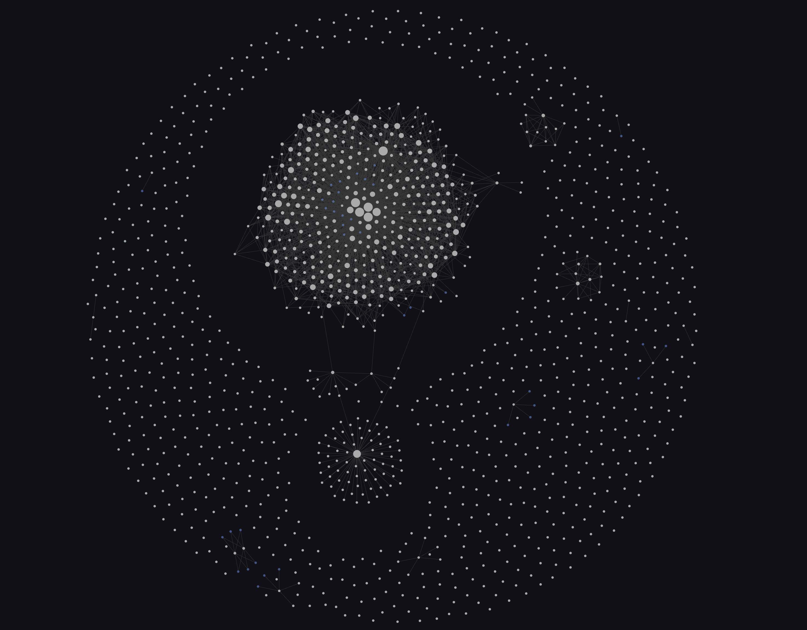

That hypnotic galaxy of dots Sean showed you has a simple meaning. Here's what you're actually looking at, and why it's the part that matters most.
The short version: EngineOS doesn't just do the work — it learns from every job it does, and remembers. The graph is that memory, made visible.

A dense, glowing, interconnected core surrounded by the raw record it grew out of. The denser a neighborhood, the more the system has thought about that topic.
Most AI tools start every conversation from a blank slate — they're brilliant in the moment and forget it instantly. EngineOS has an exocortex: a private, growing memory of this operator's work. After every session, it writes down what it figured out as small, single-idea notes, and links each one to the related ideas already there. Over months, those notes wire themselves into the web you see — a brain it built out of its own experience.
It's the same instinct behind a researcher's Zettelkasten or Karpathy's "LLM operating system" — but auto-built, by the system, from real work, and queryable on demand.
Not a hand-maintained wiki and not the AI's training — it's this system's own accumulated memory of this operator's work, and it grows every week.
A system that remembers compounds. It stops re-deriving what it already figured out, it gets sharper at the work it does often, and a lesson learned once is available everywhere after.
When it built Jimmy's Agency150 dossier, it didn't start from scratch — it recalled how it had done past company briefings (Trinity, Fresha) and stood on them, reusing the proven shape instead of reinventing it. That "recall" is this memory, working. The dossier you're looking at is partly a product of everything in that graph.
It's real and it's growing — but it's also a living system we're still perfecting. Just tonight, while reviewing how it's doing, we caught and fixed a bug in how it saves new memories (a failed save could quietly skip itself). The point isn't that it's flawless — it's that we monitor its health and show you the warts. A system that hides its failures is the one to distrust; one that catches its own and tells you is the one you can.